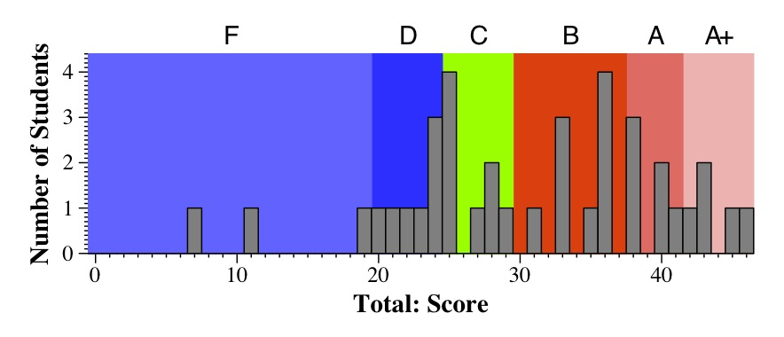
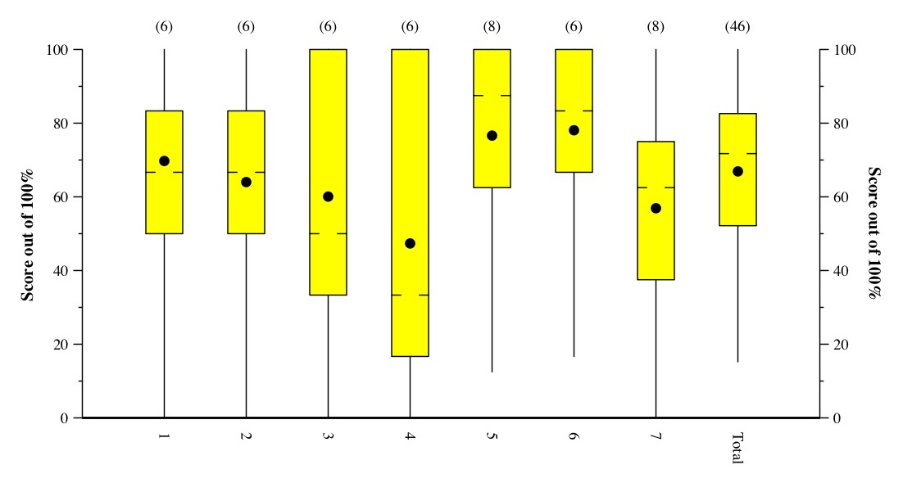

The ranges of grades are below. I am not breaking up grades into "B+" or "A-". Instead, I simply break them up into ABCD, and use those scores to calculate your final scores. When I get the final scores, I will break up the B's into A-/B+/B, and the C's into B-/C+/C.
|  |
|  |
This is a Tukey Plot, which has lines to the max and min, yellow box denoting
the 1st and 3rd quartiles, hash marks at the median, and dot at the mean.
In the "answers and grading", there are histograms of scores for each question.